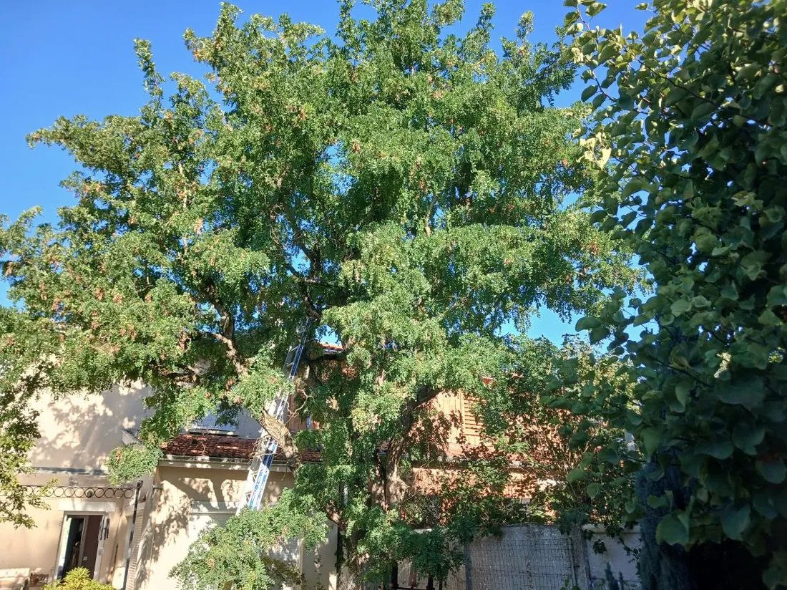
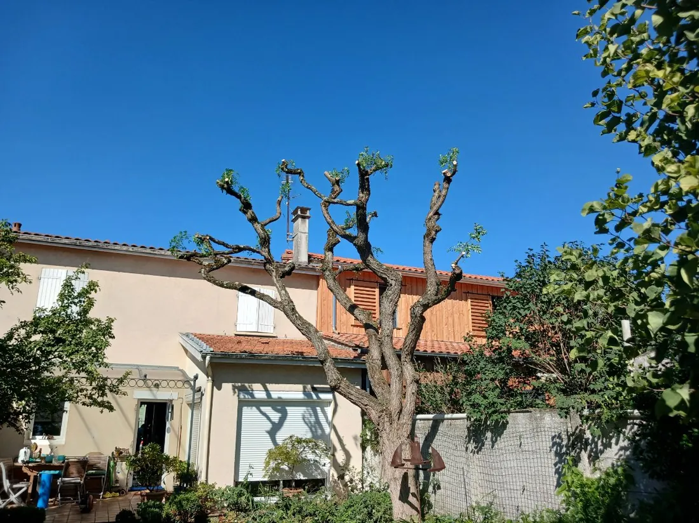

Un arbre de cour remis sur ses têtes
Le houppier couvrait toute la cour et venait au contact de la toiture. L'arbre est conduit en têtard depuis des années. Il a été retaillé sur les têtes existantes, pas ailleurs.
Le même point de vue, avant et après
L'écart surprend. Il faut savoir ce que l'on regarde, et la suite de la page l'explique.

Avant
AprèsCe qui a été fait
- Commune, Bordeaux
- Arbre de cour, ceint de murs et de constructions
- Conduite en têtard, reprise sur les têtes existantes
- Houppier venu au contact de la toiture voisine
- Période [[À CONFIRMER : mois et année de l'intervention à Bordeaux]]
- Durée du chantier [[À CONFIRMER : durée de l'intervention]]
- Essence [[À CONFIRMER : essence de l'arbre, à ne pas deviner d'après la photo]]
Pourquoi cet arbre n'a pas été taillé en douceur
Nous défendons la taille douce sur ce site, et cette photo semble dire le contraire. Elle mérite donc une explication, parce que les deux ne s'opposent pas.
Regardez les extrémités des branches sur la seconde image. Elles se terminent par des renflements, des sortes de poings de bois. On les appelle des têtes. Elles ne se forment pas en une intervention, elles résultent de coupes répétées au même endroit pendant des années.
Cet arbre est donc conduit en têtard, une forme ancienne et courante dans les cours bordelaises, où la place manque. Sur un sujet mené ainsi, la bonne pratique consiste à recouper sur les têtes, exactement là où les coupes précédentes ont été faites.
Ce serait une faute d'appliquer ici la taille douce. Les repousses d'un têtard partent des têtes et restent mal ancrées. Les laisser grossir librement, c'est préparer une casse au premier coup de vent, au-dessus d'une toiture.
La faute inverse existe aussi, et elle est plus fréquente. Elle consiste à traiter un arbre libre comme un têtard, en le rabattant sur du gros bois qui n'a jamais été coupé. Là, les plaies ne se referment pas et l'arbre se dégrade. La règle tient en une phrase, on reconduit la forme qui existe, on n'en impose pas une nouvelle.
Ce que l'on nous demande sur l'élagage à Bordeaux
Parce que la coupe se fait au même endroit que les fois précédentes, sur des renflements appelés têtes. L'arbre paraît nu pendant quelques semaines, puis repart depuis ces têtes et refait son volume dans la saison. Ce n'est pas une taille sévère improvisée, c'est la reconduite d'une forme installée depuis des années.
Mieux vaut éviter. Les repousses partent des têtes et restent mal ancrées tant qu'elles sont jeunes. Laissées libres pendant des années, elles prennent du poids et du vent, et finissent par casser. Un arbre mené en têtard se retaille à intervalle régulier, sinon il devient dangereux.
Le repos végétatif, de la chute des feuilles au début du débourrement, convient à la plupart des sujets. On évite les fortes gelées et la période de nidification. Certaines essences font exception et se taillent mieux en vert. L'essence commande donc la date, plus que le calendrier.
Par les cordes. Aucune nacelle n'entre dans une cour ceinte de murs, et il n'y a pas d'aire de chute. Le grimpeur monte, coupe, et les sections sont descendues en rétention jusqu'au sol. C'est la configuration la plus courante dans les échoppes bordelaises.